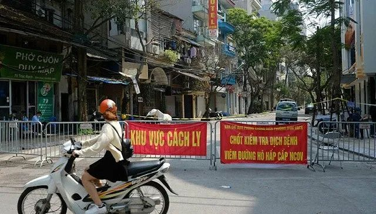

肺炎日记|3月6日：居民生活保障“最后一公里”之困
原文链接 备份链接 【财新网】（记者 黄蕙昭 综合）封城、封路、封社区下，居民生活保障仍有诸多挑战，考验基层社区组织和整体物资调运能力。面对“最后一公里”种种具体的矛盾，官方要求不回避冲突，杜绝形式主义、官僚主义，切实解决问题。 3月5 …
河内被封锁的街区。图片来源：VnExpress
记者：肖恩
“
越南副总理武德詹表示，越南已制定好应对各种不同情况的计划，包括国内确诊患者达到上千人的情况，未来几天新增病例可能有几十甚至几百例。
”
2月底，在全球多国相继出现新冠肺炎疫情且确诊病例不断增加的同时，与中国相邻的越南显得尤为平静，此前已经连续22天没有新增病例。就在人们的生活逐步恢复正常的时候，一架从英国伦敦飞往越南首都河内的飞机打破了这份平静。
3月6日，越南通报确诊第17例新冠肺炎病例，这是继2月25日越南第16例——也是此前最后一例病例治愈出院后首次出现新增确诊，结束了10天的“零病例”状态。3月6日是周五。越南股市周一（3月9日）复市交易，盘中跌幅超过6%。
家住越南的居民刘先生告诉界面新闻，在通报第17例病例的第二天，各超市都出现了抢购情况，他在网上订购的食品均未发货，“只收到一封库存不足的道歉信”。
越南副总理武德詹表示，第17例的出现意味着越南进入防控疫情的第二阶段，由于疫情已蔓延至全球超过100个国家，这个阶段将比之前更加艰难。
第17例病例是一名来从英国返回的26岁女性越南游客，她乘坐越南航空VN0054次航班商务舱于3月2日抵达河内内排机场，随后返回河内家中。3月5日，她因高烧不退、咳嗽、乏力前往医院就医，随后被确诊感染新冠肺炎。
这位患者在2月15日从河内飞往伦敦，先后在2月18日和25日前往疫情较重的意大利米兰和法国巴黎旅游，并在29日开始出现咳嗽和乏力症状，但当时没有发烧。患者在没有就医的情况下登上了返回越南的客机，并在入境时隐瞒了身体不适状况。目前她已被转至中央热带疾病医院东英县分院的负压隔离病房接受治疗。
随后两天里，越南又新增13人确诊感染新冠病毒，其中10人是VN0054次航班的乘客，年龄在58至74岁，有9人乘坐商务舱，1人乘坐经济舱；另有2名越南人是第17例病例的密切接触者。
据越南快讯网报道，VN0054次航班上共有乘客217人，包括21名商务舱乘客和180名经济舱乘客 ，还有16名机组成员。越南计划投资部部长阮志勇也在同一航班上，但他两次新冠病毒检测结果均呈阴性。
截至3月9日上午11点30分，越南累计确诊病例已激增至30例，分布在全国10个省市，还有100例疑似病例，暂无死亡病例。新增确诊病例均情况稳定。从国籍上看，最近的新增患者中有7名英国人、5名越南人、1名爱尔兰人和1名墨西哥人。

图片来源：越南卫生部
根据越南广宁省公布的其中四例外国输入病例在越南的行动轨迹，确诊患者在抵达越南后曾乘坐火车、大巴、飞机等交通工具前往下龙湾等旅游区。该省已经封锁了两家确诊患者曾经居住的酒店，127名密切接触者被隔离。第17例病例同机者乘坐过的18艘邮轮、密切接触者所在的村庄、逗留的区域也都暂时封锁。
在第17例病例确诊后，河内政府也迅速采取防控措施，从6日晚起封锁病例所在的一段长约500米的街道，其中22户人家约176人全部被要求居家隔离14天，部分居住在确诊患者隔壁的人被送至中央热带疾病医院东英县分院集中隔离。曾有两名确诊患者前去游玩的老街省也隔离了180名密切接触者。
目前越南政府已联系到VN0054次航班上的176名乘客，仅有60人在河内，其他人分散在各地。越方还在积极寻找其他乘客，以及与确诊患者有密切接触的人群。
除打破“零病例”的第17位患者外，随之而来的第18例病例则是一名长居韩国的越南人，4日从韩国大邱回国，入境后立即被隔离。法国广播电台（RFI）指出，韩国疫情爆发对越南来说也是一个潜在威胁。两国商贸往来频繁，有近4.8万越南人在韩国工作，其中有4000人在韩国疫情中心的大邱市和庆北地区。
武德詹指出，实际上新冠肺炎疫情已经“暗中埋伏”在越南内部，如果不能有效控制，将出现内忧外患的局面。他表示，越南已制定好应对各种不同情况的计划，包括国内确诊患者达到上千人的情况，未来几天新增病例可能有几十甚至几百例。
3月7日起，无论是否越南国籍，所有入境越南的旅客都必须完成电子健康申报，任何曾前往或途经中国、韩国、伊朗和意大利四国的旅客都必须接受14天集中隔离。从3月10日上午起，越南将在全国范围内实施全民健康申报制度，所有在越南境内的居民和游客都需要完成强制性的健康申报程序。
越南防疫指导委员会还建议，暂时停止对欧盟及英国，还有其他累计确诊病例在500人以上或单日新增病例超过50例的国家的免签政策。任何出现发烧等症状的外国旅客将被禁止入境。
3月9日上午，越南20个省市再次延长中小学停课日期，包括河内和胡志明市在内多地拟停课至3月15日。根据原来的计划，越南多地高中已经于3月2日复课，初中、小学和学前教育学校则继续延长停课时间1周至15日。
未经授权 禁止转载

原文链接 备份链接 【财新网】（记者 黄蕙昭 综合）封城、封路、封社区下，居民生活保障仍有诸多挑战，考验基层社区组织和整体物资调运能力。面对“最后一公里”种种具体的矛盾，官方要求不回避冲突，杜绝形式主义、官僚主义，切实解决问题。 3月5 …
原文链接 备份链接 【财新网】（记者 黄蕙昭 综合）新冠疫情新增病例连续十日降至千例以下，湖北省外新增病例维持个位数，疫情防控取得显著成效。另一方面，新冠肺炎防控引发的一系列“次生灾害”，也受到更多关注。部分医院门诊住院关停，非新冠患者就 …
原文链接 备份链接 【财新网】（记者 丁捷 综合）疫情爆发两月至今，随着重症、危重症病例和病死率下降，武汉疫情快速上升的趋势得到遏制，湖北省除武汉以外的其他地市，局部暴发态势得到遏制，全国疫情持续向好。国家卫生健康委2月28日强调，湖北省 …
原文链接 备份链接 韩国1月20日发现首例确诊病例，此后一个月疫情发展缓慢，到2月18日确诊31例。2月19日后突然暴增，一周新增超过1200例。 18日确诊的第31号患者，被视为“超级传播者”。 韩国新冠疫情的一大特征是，在特定群 …
原文链接 备份链接 【财新网】（记者 丁捷 综合）中国国内疫情统计数据呈现向好的趋势，根据各地消息，全国已有六省下调重大突发公共卫生事件应急响应级别。尽管部分重症、危重症病例转为死亡病例，但总量在减少。另一方面，新冠肺炎疫情拉响全球警报， …